Image Warping and Mosaicing
Capturing projective photograph pairs from a fixed center of projection, recovering homographies via least-squares linear systems, implementing inverse warping with custom interpolation kernels, and compositing seamless image mosaics.
Shoot and Digitize Pictures
To ensure a projective relationship between frames, the camera's Center of Projection (COP) is kept stationary while purely rotating across the scene. Overlap between adjacent views is kept between 40% and 70% with consistent exposure and no moving foreground subjects. Below are source image sets displaying projective transformations.
Set 1: Into the Forest
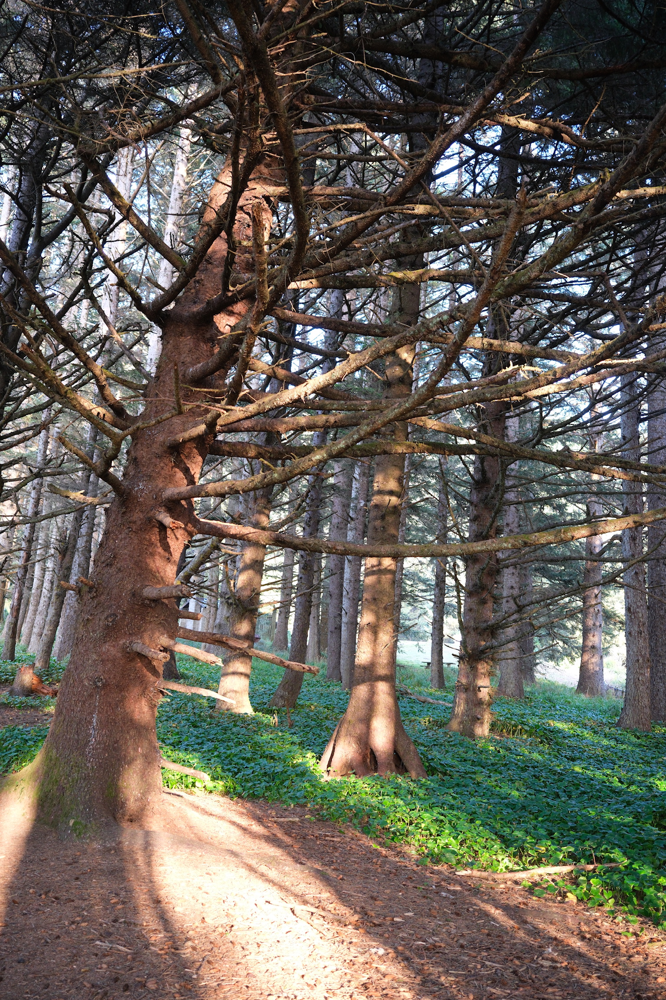
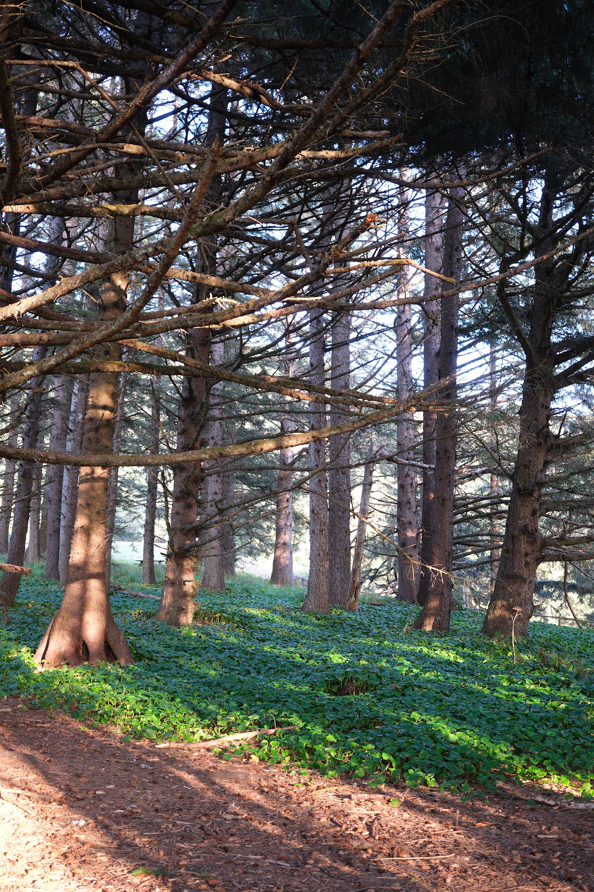
Set 2: By the Lake
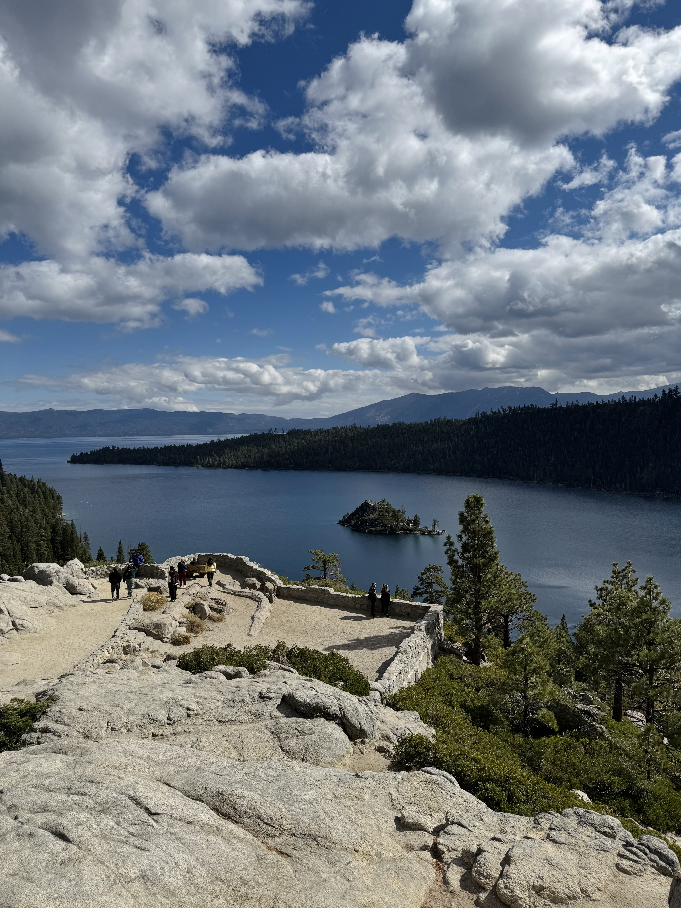
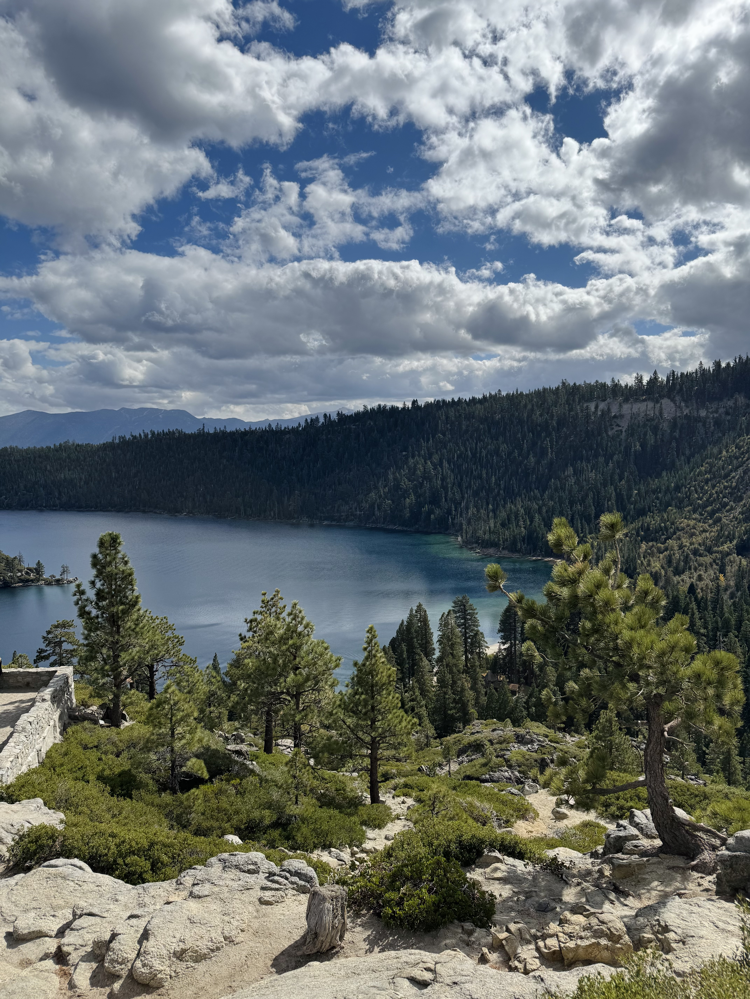
Set 3: Mountain Escape
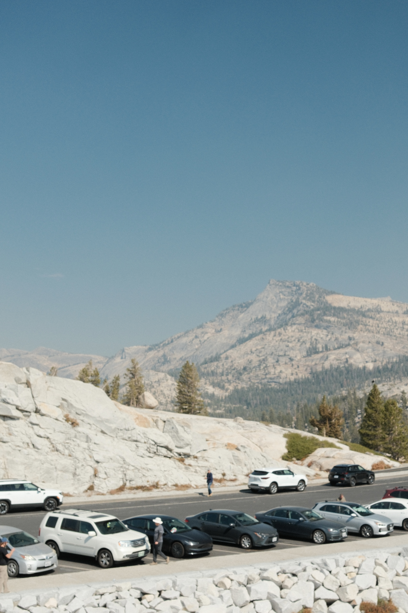
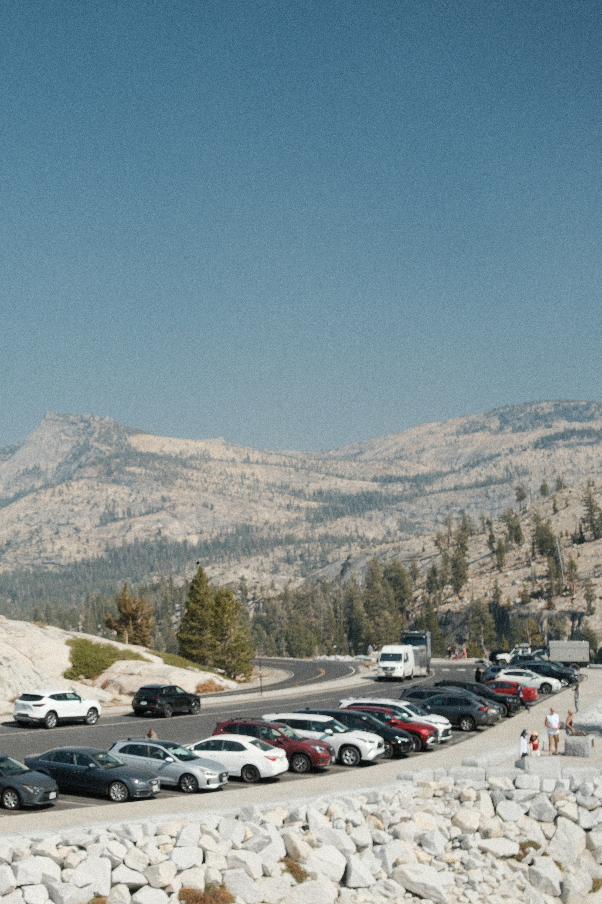
Recover Homographies
A homography \(\mathbf{H}\) is a \(3 \times 3\) matrix with 8 degrees of freedom that maps homogeneous coordinates from one planar projection to another: \(\mathbf{p}' \sim \mathbf{H}\mathbf{p}\). Setting \(h_{22} = 1\) acts as our scaling normalization:
Expanding this relation yields two linear constraints per point match \((x_i, y_i) \to (x'_i, y'_i)\):
Stacking \(n \ge 4\) correspondences produces an overdetermined system \(\mathbf{A}\mathbf{h} = \mathbf{b}\),
which we solve using least-squares via np.linalg.lstsq to minimize sensitivity to manual clicking noise:
Recovered Homography Example
Below is the recovered \(3 \times 3\) transformation matrix computed for Mosaic Set 1:
[ 1.1824e+00, -4.2180e-02, -1.9841e+02 ],
[ 6.5412e-02, 1.1215e+00, -4.8920e+01 ],
[ 2.1450e-04, -3.2081e-05, 1.0000e+00 ]
]
Point Correspondences Visualized
Corresponding landmarks clicked across overlapping image regions:
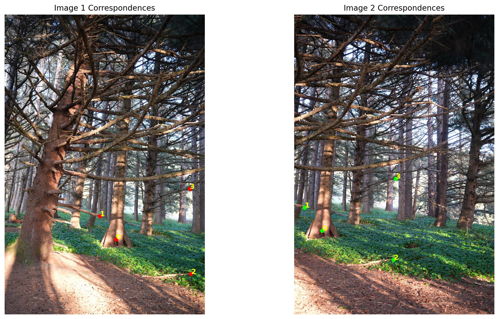
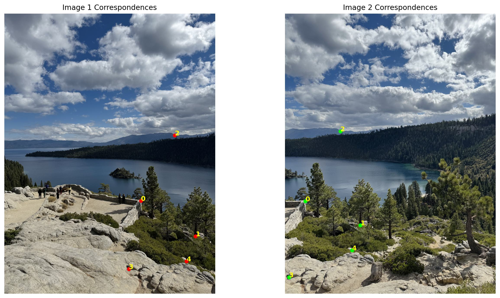
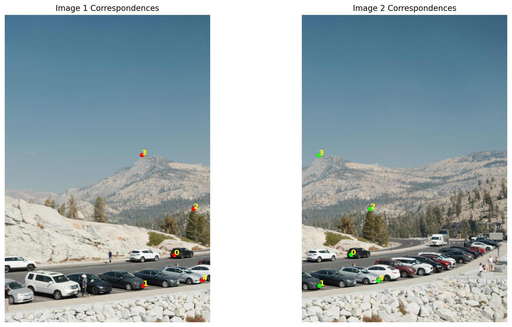
Warp the Images & Rectification
Using forward warping creates sampling holes due to rounding. We instead employ inverse warping. For each discrete pixel \((x', y')\) on the target canvas, we compute its continuous source coordinate \(\mathbf{p} = \mathbf{H}^{-1}\mathbf{p}'\) and sample color values using two custom interpolation methods written from scratch.
Nearest Neighbor Interpolation
Selects the nearest pixel to fill each position. It is fast but can make edges look jagged or blocky.
Bilinear Interpolation
Blends the four nearest pixels based on their distances. It produces smoother edges and more natural-looking images, but takes slightly longer to compute.
Runtime Benchmarks
Execution times for inverse warping each target canvas. Nearest-neighbor rounding avoids weighted averaging calculations, whereas bilinear interpolation requires four neighbor lookups and fractional distance weighting per pixel.
| Target Scene | Nearest Neighbor | Bilinear Interpolation |
|---|---|---|
| Rectification 1 (Framed Subject) | 0.0365 s |
0.0296 s |
| Rectification 2 (Planar Object) | 0.0707 s |
0.0516 s |
| Rectification 3 (Angled Surface) | 0.0218 s |
0.0264 s |
Rectification Results
We verify our homography computation and warping routines by performing ground-plane rectification. By clicking the four corners of a known planar rectangular object and mapping them to axis-aligned coordinates, the object is warped into a fronto-parallel view.
Rectification 1
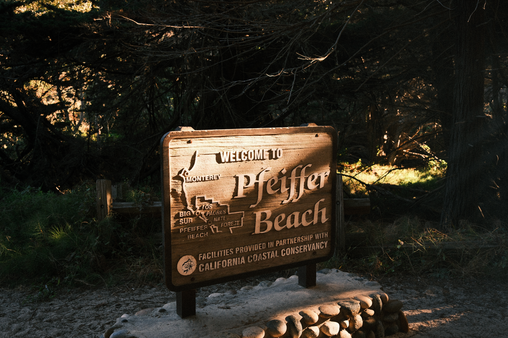
Rectification 2
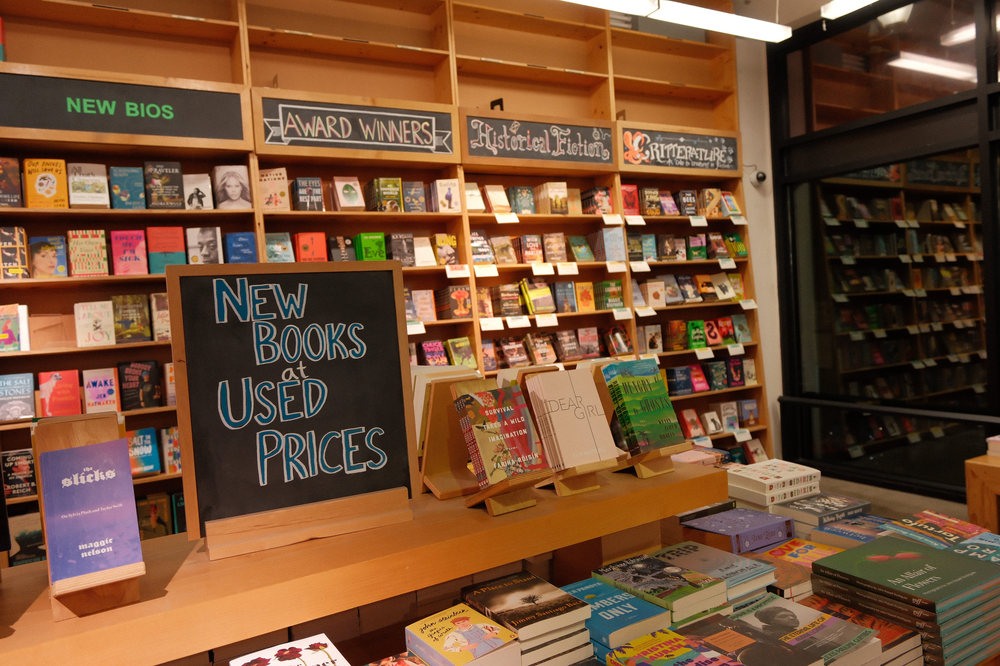
Rectification 3
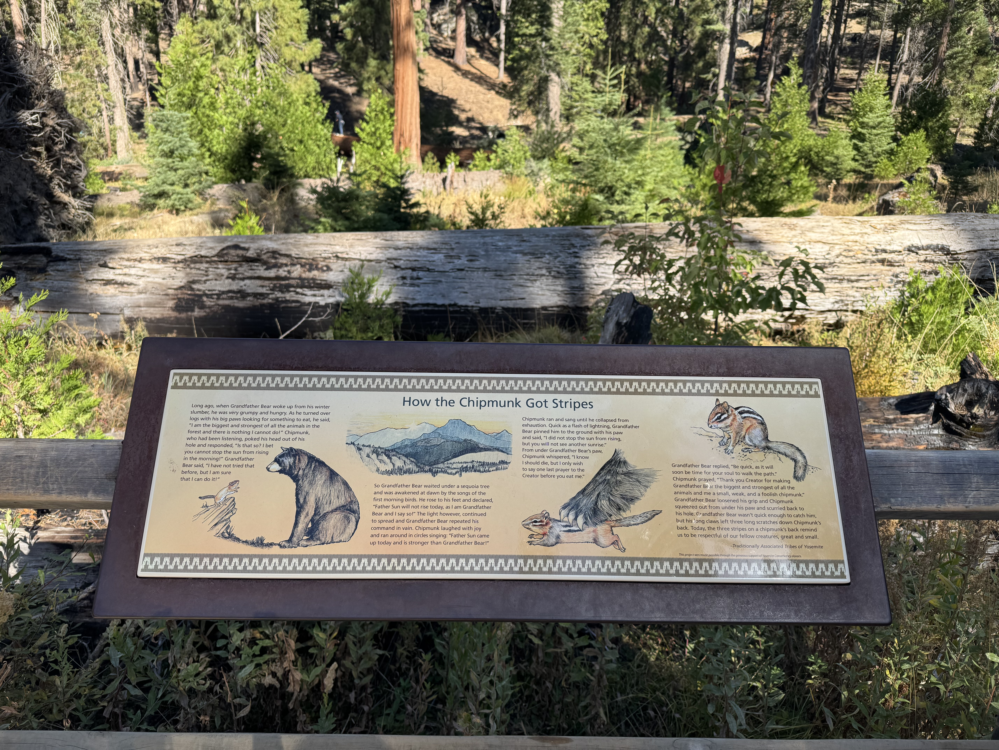
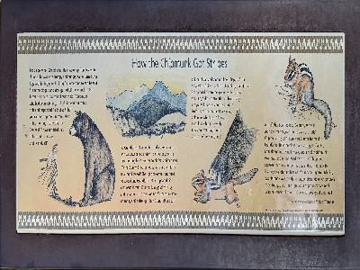
Blend Images into a Mosaic
To mosaic the aligned image pairs without harsh boundary cutoffs or double-exposure ghosting, we implement distance-weighted alpha feathering:
- Canvas Sizing: Project the 4 boundary corners of the secondary frame through \(\mathbf{H}\) to calculate the unified bounding box and origin translation offsets.
- Warping: Inverse warp the second image into the reference coordinate frame using bilinear interpolation.
- Alpha Feathering: Compute the exact Euclidean distance transform (
scipy.ndimage.distance_transform_edt) on the binary valid masks of both frames. Blending weights ramp down smoothly near image edges, eliminating seam artifacts across overlapping regions.
Mosaic 01: Into the Forest
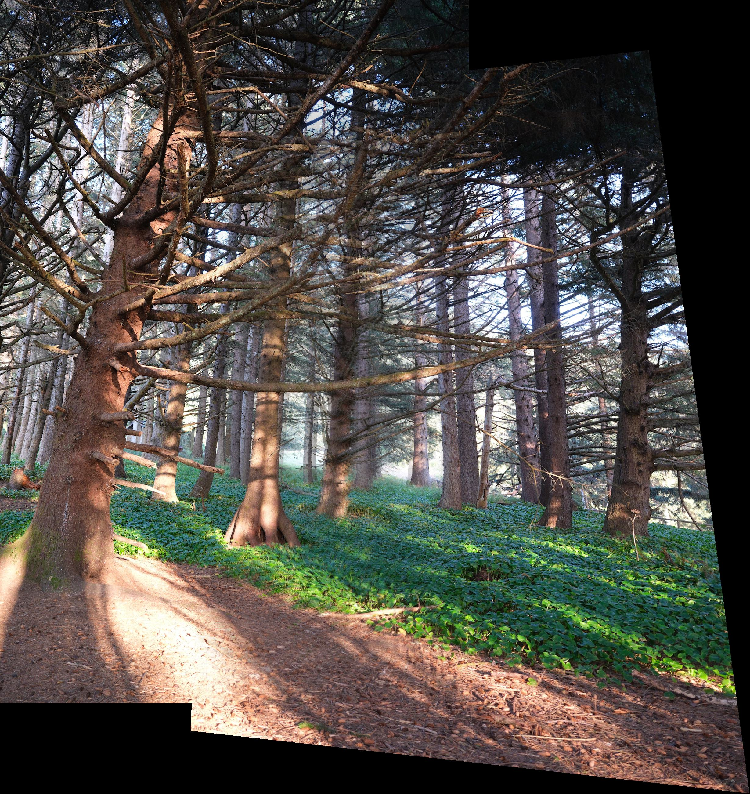
Mosaic 02: By the Lake

Mosaic 03: Mountain Escape
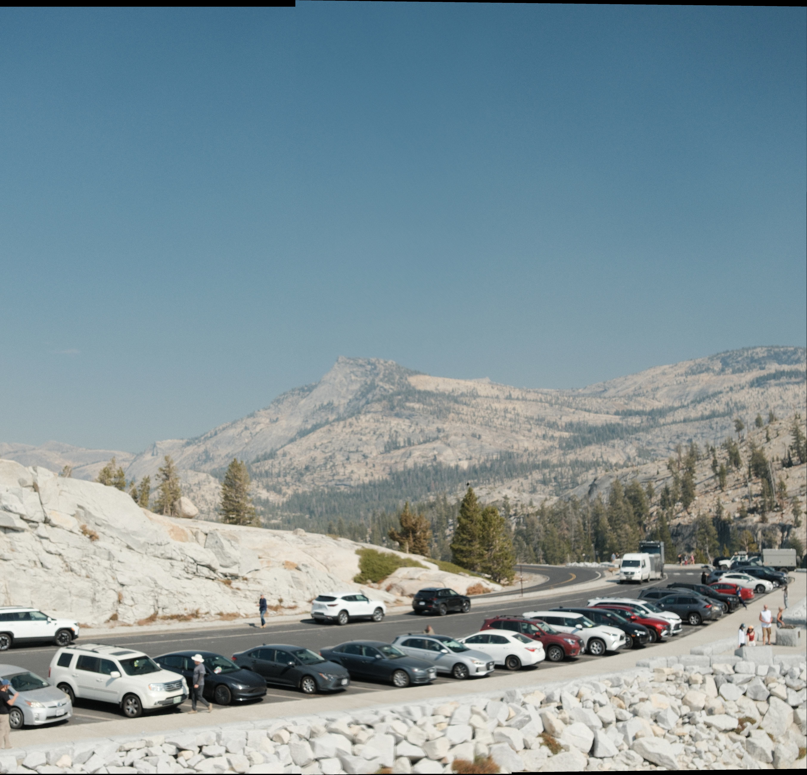
Key Takeaways
Solving the homography via an overdetermined least-squares system provides stability against minor human clicking errors.
Inverse warping coupled with bilinear interpolation eliminates spatial holes while maintaining sharp edge fidelity.
Finally, weight falloff via Euclidean distance transforms prevents exposure steps and seam lines at boundaries.
Putting these pieces together showed me how small technical choices can make a big difference in the final mosaic, and
how a few photos taken from different angles can come together to create something much bigger!